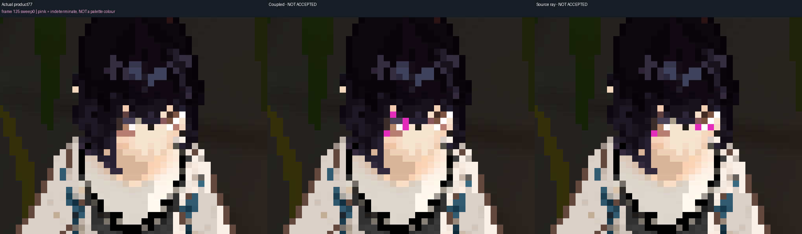
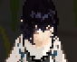
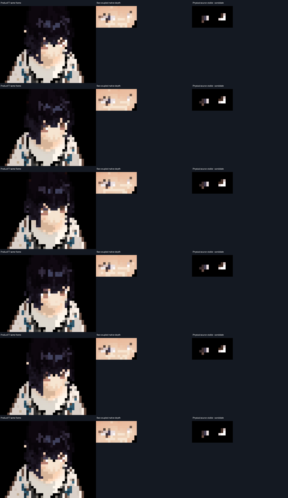

경계 대응 오차 0.0000411px · source RGB8 11714표본 차이0 ·76/77 보호368셀 일치 · 가림 전1.000092px 위상 이동에서 형태/색 서명1종. 실제 평가 메쉬의 Close와 재개방을 확보했습니다. 이 결과가 최종 가림이나 미관 성공을 뜻하지는 않습니다.
남은 실패: 연속 명암 source 대조 최대차0.066829.64재생에서 미확정1148 native 픽셀(32프레임×2후보 누적), 그중 backing 부재224입니다. fully evaluated Close의 가시성 후보에 미확정 흰자 조각이 남습니다. 인접4× 표본의 깊이를 그대로 사용하면 곡면이 자기 자신을 가릴 수 있으며, 선택된 이웃 삼각형이 실제 query를 포함하지 않는 경우는 미정으로 남겼습니다. 미세 잔여 coverage를 불투명 눈의 보존 성공으로 세지 않았습니다.
기존29 dirty와 import 뒤 추가2 dirty를 저장·ClearDirty하지 않았습니다. 현재31 dirty·47개 native 내용·같은 InputSettings 객체와 값·씬·옵션·시간·pipeline을 보존했고 RT30→30입니다.
실제 프레임/회귀 판정 · GPU192필드 대조 · 복원 증거 · 중단 실험 원인 · 전제와 한계 · C# 대응/수명 · 영역/가시성 후보



원본 crop과 로컬 지도는 서로 다른 좌표 공간입니다. 로컬 지도 자체를 최종 캐릭터라고 표시하지 않습니다.
재검사: 같은 폴더에서 python test_archive89.py. NumPy가 있는 기존 Python으로 압축을 풀지 않고32packet marker·plane source/frame/serial/view와64최종 LUT 입력/192GPU출력을 검증합니다. 이 검사는 upstream 미관/가시성을 합격시키지 않습니다. 실제 제품 통합 전 query ray의 정확한 alpha/가림·hair/body primitive·vacated-cell clean backing 연결이 필요합니다.